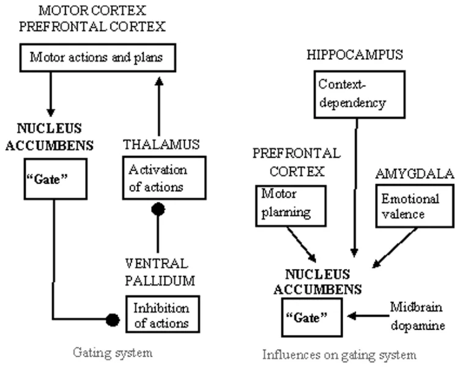
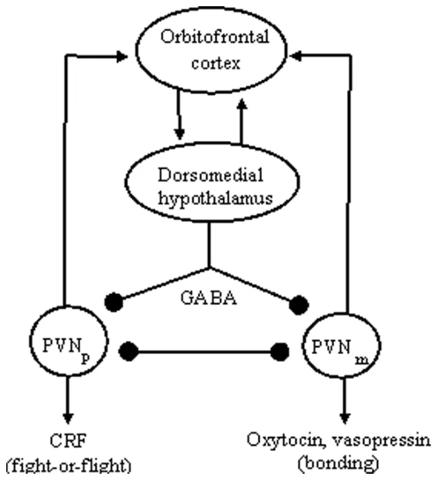
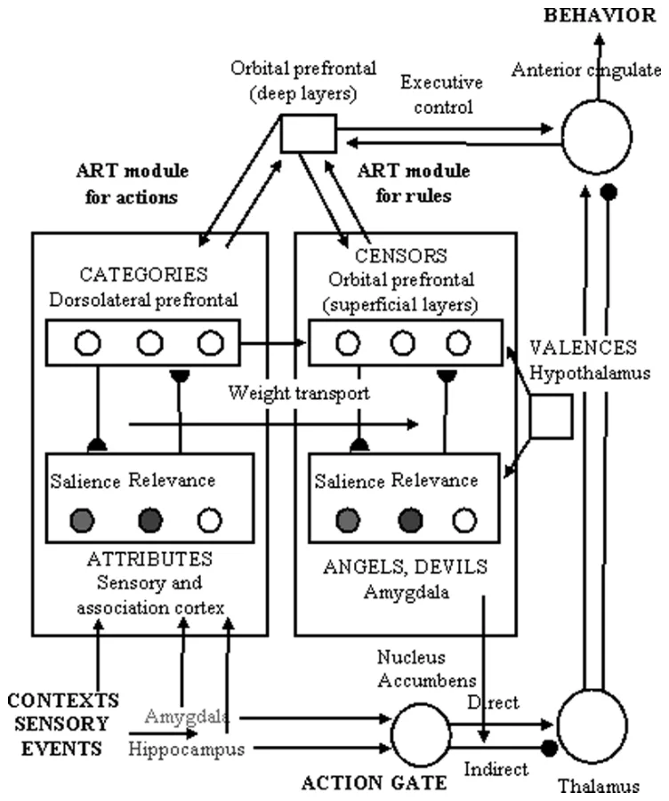
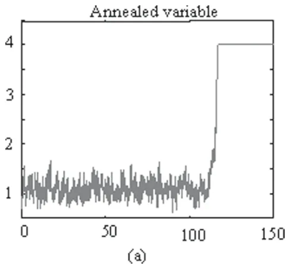
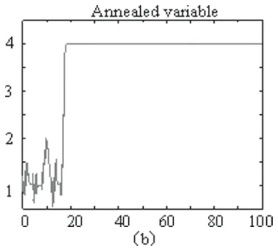
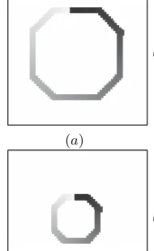
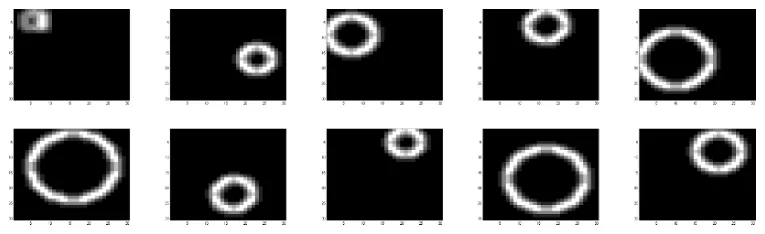

Phần I · Bài 7 — Não bộ tạo ra, thay đổi và ghi đè quy tắc ứng xử như thế nào? (Levine)
vùng gọi là nhân cạnh não thất (paraventricular nucleus), nơi sản xuất oxytocin, một hormone chủ chốt cho sự gắn kết xã hội và các khía cạnh khoái cảm của tương tác liên cá nhân (bao gồm cực khoái, chải chuốt và có thể cả xoa bóp). Ngoài ra, các công trình gần đây cũng chỉ ra vai trò mạnh mẽ của nhân lục (locus coeruleus), một nhân noradrenergic ở trung não thuộc cấu tạo lưới, trong việc thúc đẩy hành vi khám phá [43].
Các cấu trúc dưới vỏ sâu hơn của não bộ đã đóng vai trò quan trọng trong các lý thuyết định tính của những nhà khoa học thần kinh hành vi tiên phong nghiên cứu về sự tương tác giữa bản năng, cảm xúc và lý trí (ví dụ: [41, 45, 48]), và tiếp tục giữ vai trò quan trọng trong các quan sát tâm thần học lâm sàng. Tuy nhiên, những vùng dưới vỏ cổ xưa về mặt phát sinh chủng loại này thường bị các nhà mô hình hóa mạng thần kinh bỏ qua, ngoại trừ một số người mô hình hóa điều kiện hóa cổ điển (ví dụ: [6, 32]). Giờ đây là thời điểm chín muồi để xây dựng một lý thuyết toàn diện hơn về hành vi con người nhằm kết nối lại với một số lý thuyết tiên phong từ những năm 1960 và 1970.
2.2 Hạch hạnh nhân (Amygdala)
Hạch hạnh nhân kết nối chặt chẽ với các vùng động lực ở vùng dưới đồi và trung não nhưng ở “bậc cao hơn một bước” so với các vùng này trong quá trình phát triển chủng loại. Hạch hạnh nhân dường như là vùng chính yếu để gắn giá trị cảm xúc (emotional valence) tích cực hoặc tiêu cực vào các sự kiện cảm giác cụ thể (ví dụ: [22]). Do đó, hạch hạnh nhân tham gia vào mọi phản ứng cảm xúc, từ những phản ứng nguyên thủy nhất đến những phản ứng được dẫn dắt bởi nhận thức cao nhất. Ở động vật, việc cắt bỏ hạch hạnh nhân hai bên làm gián đoạn quá trình tiếp thu và duy trì các phản ứng có điều kiện, và các tế bào thần kinh hạch hạnh nhân học cách phát xung để đáp ứng với các kích thích có điều kiện.
Hạch hạnh nhân đặc biệt được nghiên cứu kỹ lưỡng liên quan đến điều kiện hóa nỗi sợ [35, 36]. Armony, Servan-Schreiber, Cohen và LeDoux [1, 2] đã phát triển các mô hình tính toán về điều kiện hóa nỗi sợ, trong đó hạch hạnh nhân giữ vai trò nổi bật. Trong các mô hình này, có các con đường vỏ não và dưới vỏ song song cùng đi tới các vùng xử lý cảm xúc chính của hạch hạnh nhân. Con đường dưới vỏ (từ đồi thị) nhanh hơn con đường vỏ não, nhưng vỏ não thực hiện việc phân biệt kích thích tinh tế hơn so với đồi thị. Điều này gợi ý rằng hai con đường thực hiện các chức năng bổ sung cho nhau: con đường dưới vỏ là tín hiệu báo trước chính yếu về sự hiện diện của các kích thích có khả năng gây nguy hiểm, còn con đường vỏ não thực hiện các đánh giá chi tiết hơn về những kích thích đó.
Thông qua các kết nối giữa hạch hạnh nhân và các phần khác nhau của vỏ não trước trán, các kích thích có ý nghĩa cảm xúc có lợi thế xử lý chọn lọc so với các kích thích phi cảm xúc. Tuy nhiên, điều đó không có nghĩa là quá trình xử lý cảm xúc tự động lấn át sự chú ý có chọn lọc đối với các kích thích phi cảm xúc vốn liên quan đến bất kỳ nhiệm vụ nào mà sinh vật đang thực hiện. Nếu các đối tượng người đang tham gia một nhiệm vụ nhận thức đòi hỏi sự chú ý cao và các khuôn mặt cảm xúc (ví dụ: khuôn mặt biểu lộ nỗi sợ) được trình bày ở một vị trí không liên quan đến nhiệm vụ, mức độ hoạt hóa hạch hạnh nhân giảm đi đáng kể so với tình huống các khuôn mặt cảm xúc có liên quan đến nhiệm vụ [52, 53]. Sự tương tác phức tạp này giữa chú ý và cảm xúc đã được nắm bắt trong nhiều mô hình mạng lưới liên quan đến hạch hạnh nhân cũng như cả vỏ não trước trán ổ mắt và lưng bên (ví dụ: [25, 57]).
2.3 Hạch nền và Đồi thị (Basal Ganglia and Thalamus)
Một hệ thống mã hóa quy tắc bậc cao đòi hỏi một cơ chế để chuyển đổi các liên kết cảm xúc tích cực và tiêu cực thành xu hướng hành động hoặc né tránh. Điều này phù hợp với ý tưởng phổ biến về một hệ thống cổng (gating system): một mạng lưới não bộ chọn lọc các kích thích cảm giác để xử lý tiềm năng và các hành động vận động để thực hiện tiềm năng. Hầu hết các nhà khoa học thần kinh đặt hệ thống cổng này vào các con đường giữa vỏ não trước trán, hạch nền và đồi thị (Hình 2a); để xem tổng quan lý thuyết, tham khảo [21]. Liên kết từ hạch nền đến đồi thị trong Hình 2a đóng vai trò giải ức chế (disinhibition); nghĩa là cho phép (dựa trên các tín hiệu ngữ cảnh) thực hiện các hành động mà biểu diễn của chúng thường bị ức chế.
Vùng cổng quan trọng nhất trong hạch nền là nhân nằm (nucleus accumbens). Nhiều nhà khoa học thần kinh xác định nhân nằm là cầu nối giữa hệ thống động lực và hệ thống vận động, và do đó là nơi tác động của các phần thưởng — bất kể những phần thưởng này đến từ các kích thích củng cố tự nhiên như thức ăn hay tình dục, các yếu tố củng cố đã học như tiền bạc, hay các chất gây nghiện [44].

Hình 2 Bên trái: Các vòng lặp giữa nhân nằm, đồi thị và vỏ não để điều khiển cổng hành vi. Nhân nằm giải ức chế có chọn lọc các biểu diễn hành động bằng cách ức chế cầu nhạt bụng (ventral pallidum), qua đó giải phóng tín hiệu từ đồi thị lên vỏ não. Bên phải: các tác động lên việc điều khiển cổng có chọn lọc từ hồi hải mã (ngữ cảnh), hạch hạnh nhân (cảm xúc) và vỏ não trước trán (lập kế hoạch). Phỏng theo [46] với sự cho phép của Elsevier science
Rõ ràng, các tác động lên nhân nằm từ những vùng não khác là chìa khóa cho các lựa chọn về việc biểu diễn kích thích hoặc hành động nào được phép đi qua cổng. Newman và Grace [46] xác định ba tác động chính lên vùng này: thứ nhất liên quan đến ngữ cảnh, thứ hai liên quan đến cảm xúc, và thứ ba liên quan đến kế hoạch.
Hình 2b cho thấy một số tác động lên hệ thống cổng nhân nằm. Các tác động từ hồi hải mã đặc biệt mạnh mẽ: các kết nối hồi hải mã đang hoạt động có thể chuyển đổi từng tế bào thần kinh nhân nằm từ trạng thái bất hoạt sang trạng thái hoạt động [47]. Vì hồi hải mã mã hóa các liên kết ngữ cảnh cho trí nhớ làm việc, đây có thể là phương tiện làm thiên lệch các cổng theo hướng ưu tiên các kích thích phù hợp với ngữ cảnh.
Như Newman và Grace [46] lưu ý, cũng có một sự thiên lệch cạnh tranh ưu tiên các kích thích nổi bật về mặt cảm xúc, bất kể ngữ cảnh. Điều này được trung gian bởi các kết nối tới nhân nằm từ hạch hạnh nhân (Hình 2b). Các đầu vào từ hồi hải mã, gắn liền với nhận thức “lạnh”, hoạt động trên thang thời gian chậm và thúc đẩy độ nhạy chọn lọc đối với một nhiệm vụ kéo dài. Các đầu vào từ hạch hạnh nhân, gắn liền với nhận thức “nóng”, thúc đẩy độ nhạy đối với các đòi hỏi cảm xúc mạnh mẽ và ngắn hạn.
Cuối cùng, các tác động từ vỏ não trán liên quan đến việc lập kế hoạch. Bây giờ chúng ta chuyển sang thảo luận chi tiết về các vùng liên quan của vỏ não trước trán.
2.4 Vỏ não trước trán (Prefrontal Cortex)
Nhiều mô hình vận động phức tạp liên quan đến cả chuyển động phản ứng và chuyển động có kế hoạch. Sự tương tác giữa các chức năng phản ứng của hạch nền và các chức năng lập kế hoạch của vỏ não trước trán đã được mô hình hóa trong trường hợp chuyển động mắt nhanh (saccadic eye movements) [7].
Ba tiểu vùng của vỏ não trước trán đóng các vai trò đặc biệt quan trọng và bổ sung cho nhau trong việc lập kế hoạch và tổ chức hành vi bậc cao. Các vùng này là vỏ não trước trán ổ mắt (OFC), vỏ não trước trán lưng bên (DLPFC) và vỏ não vành trước (ACC).
OFC là vùng bị tổn thương ở bệnh nhân nổi tiếng thế kỷ 19 Phineas Gage, và ở các bệnh nhân khác bị khiếm khuyết trong việc ra quyết định và hành vi phù hợp với xã hội [15]. Dựa trên các quan sát lâm sàng như vậy và từ các nghiên cứu tổn thương ở động vật, các nhà khoa học thần kinh tin rằng vỏ não trước trán ổ mắt hình thành và duy trì các liên kết tinh thần giữa các sự kiện cảm giác cụ thể trong môi trường và các trạng thái cảm xúc tích cực hoặc tiêu cực. Vùng này tạo ra các liên kết như vậy thông qua các kết nối giữa các mẫu hoạt động thần kinh ở vỏ não cảm giác phản ánh các sự kiện cảm giác trong quá khứ, và các mẫu hoạt động thần kinh khác ở các vùng dưới vỏ (ở cả hạch hạnh nhân và vùng dưới đồi) phản ánh các trạng thái cảm xúc.
Việc lưu trữ dài hạn hơn các giá trị cảm xúc có khả năng nằm ở các kết nối từ vỏ não trước trán ổ mắt đến hạch hạnh nhân ([55]; xem [20] và [40] để biết các mô hình). Những thay đổi ảnh hưởng đến hành vi (các chỉ dẫn “nên làm” và “không nên làm”, tiến lại gần hoặc né tránh một đối tượng) có khả năng nằm ở các kết nối từ hạch hạnh nhân đến vỏ não trước trán giữa (động lực kích thích) và từ vỏ não ổ mắt đến nhân nằm (thói quen).
Eisler và Levine [18] phỏng đoán rằng mở rộng ra, OFC có thể trung gian cho việc kích hoạt các nhóm lớn các phản ứng có ý nghĩa cảm xúc, chẳng hạn như phản ứng gắn kết so với phản ứng chiến-hay-chạy (fight-or-flight). Họ đề xuất một cơ chế cho việc lựa chọn phản ứng như vậy liên quan đến các kết nối qua lại giữa OFC và nhân cạnh não thất (PVN) của vùng dưới đồi. Các phần khác nhau của PVN chứa nhiều loại hormone khác nhau bao gồm oxytocin và vasopressin, hai hormone quan trọng cho các phản ứng gắn kết (ví dụ: [11]); và CRF, tiền chất sinh hóa của hormone căng thẳng cortisol vốn quan trọng cho phản ứng chiến-hay-chạy [34]. OFC tạo khớp thần kinh lên một vùng khác gọi là vùng dưới đồi lưng giữa, nơi gửi các tế bào thần kinh ức chế đến PVN được trung gian bởi chất dẫn truyền ức chế GABA (axit gamma-amino butyric). Điều này ảnh hưởng đến việc kích hoạt có chọn lọc tiểu vùng sản xuất hormone này hay tiểu vùng khác của PVN (xem Hình 3).
DLPFC là một vùng trí nhớ làm việc, và có kết nối chặt chẽ hơn với hồi hải mã thay vì hạch hạnh nhân. Nó tham gia vào việc xử lý thông tin ở mức độ trừu tượng cao hơn so với OFC. Ví dụ, ở khỉ, tổn thương OFC làm suy giảm khả năng học các thay đổi về giá trị phần thưởng trong một chiều kích thích, trong khi tổn thương DLPFC làm suy giảm khả năng học các thay đổi về việc chiều nào là liên quan [17]. Dehaene và Changeux [16] coi vỏ não trước trán lưng bên là nơi tạo ra

Hình 3 Các tác động của vỏ não trước trán ổ mắt lên vùng dưới đồi. GABA là một chất dẫn truyền thần kinh ức chế. Các chỉ số dưới “p” và “m” viết tắt cho “tế bào nhỏ” (parvicellular) và “tế bào lớn” (magnocellular). Phỏng theo [18] với sự cho phép của Springer-Verlag sự đa dạng. Nghĩa là, DLPFC tạo ra các quy tắc quyết định khả dĩ khác nhau, trong khi các mạch cảm xúc của OFC lọc các quy tắc khả dĩ dựa trên phần thưởng và hình phạt nhận được khi tuân theo các quy tắc này [15, 45].
Sự khác biệt giữa chức năng của OFC và DLPFC phản ánh sự khác biệt đã thảo luận trước đó giữa nhận thức “nóng” của hạch hạnh nhân và nhận thức “lạnh” của hồi hải mã. Tuy nhiên, các vùng trước trán ổ mắt “cảm xúc” và trước trán lưng bên “liên quan đến nhiệm vụ” không thể tách rời hoàn toàn để hoạt động nhận thức hiệu quả. Thay vào đó, thông tin cảm xúc và thông tin liên quan đến nhiệm vụ cần được tích hợp trong hệ thống điều hành tổng thể của não bộ, để mạng lưới có thể quyết định khi nào tiếp tục hoàn thành một nhiệm vụ và khi nào cho phép các cân nhắc khẩn cấp ngoài nhiệm vụ lấn át việc hoàn thành nhiệm vụ. Các kết nối rộng khắp giữa hai vùng này (ví dụ: [3, 49]) cấu thành một cơ chế để tích hợp hai cấp độ chức năng này.
Tuy nhiên, các nghiên cứu hình ảnh não cũng gợi ý rằng một vùng trước trán thứ ba, ACC, đóng một vai trò quan trọng trong loại hình tích hợp điều hành này. Posner và các đồng nghiệp [9, 54] phát hiện thấy ACC được kích hoạt khi một đối tượng phải chọn hoặc chuyển đổi giữa các cách diễn giải hoặc khía cạnh khác nhau của một kích thích. Ngoài ra, Yamasaki, LaBar và McCarthy [58] đã giao cho các đối tượng một nhiệm vụ chú ý kèm theo các yếu tố gây nhiễu cảm xúc và đo lường phản ứng của các vùng não khác nhau đối với các kích thích mục tiêu (liên quan đến nhiệm vụ) và các kích thích gây nhiễu. Yamasaki và cộng sự nhận thấy rằng trong khi các vùng có sự gia tăng hoạt hóa đối với hai loại kích thích này phần lớn tách biệt, thì ACC là vùng duy nhất có mức độ hoạt hóa tăng lên đối với cả kích thích mục tiêu lẫn kích thích gây nhiễu.
ACC có lẽ là vùng bí ẩn và tinh tế nhất trong toàn bộ não bộ. Ban đầu nó được coi là một phần của hệ viền (limbic system) hơn là vỏ não [50] vì những vai trò mạnh mẽ của nó trong các chức năng liên quan đến cảm xúc. Các lý thuyết gần đây về chức năng vỏ não vành trước đã nhấn mạnh vai trò của nó trong việc phát hiện lỗi phản ứng tiềm ẩn hoặc xung đột giữa các tín hiệu thúc đẩy các phản ứng cạnh tranh nhau [4, 5, 28].
Cả ba vùng này của vỏ não trước trán đều phục vụ các khía cạnh khác nhau của cái được biết đến trên lâm sàng là chức năng điều hành (executive function). Nhưng trong hệ thống chính phủ Hoa Kỳ, “hành pháp” (executive) mang một ý nghĩa chuyên biệt hơn, mô tả một trong ba nhánh quyền lực ngang hàng (ít nhất là trên lý thuyết) của chính phủ, hai nhánh còn lại là lập pháp và tư pháp. Hãy cho phép tôi đề xuất một phép tương tự đầy thú vị nhưng hợp lý giữa ba vùng lớn của vỏ não trước trán và ba nhánh của chính phủ tam quyền phân lập của chúng ta. OFC là lập pháp: với tư cách là nơi tích hợp thông tin xã hội và cảm xúc, đồng thời là người phán xét tính phù hợp của hành động, nó là bộ phận của hệ thống nắm bắt được “nhịp đập của người dân” (“người dân” ở đây là não dưới vỏ và các nhu cầu của nó). DLPFC là hành pháp theo nghĩa đó: nó có trình độ chuyên môn sâu cho phép tạo ra và thử nghiệm các chính sách quan trọng. Và ACC là tư pháp: với tư cách là bộ phát hiện lỗi, nó đóng vai trò như một chiếc phanh kìm hãm các hoạt động khả dĩ của hai vùng kia khi chúng đi quá xa khỏi các nguyên tắc nền tảng của hành vi hiệu quả.
Giờ đây, khi đã điểm qua các chức năng được công nhận rộng rãi của một số vùng dưới vỏ và trước trán, chúng ta muốn ghép chúng lại thành một bức tranh lớn hơn. Trong một bài báo trước đó [39], tôi đã giới thiệu các khái niệm về thiên thần và ác quỷ hành vi thần kinh (neurobehavioral angels and devils). Từ thiên thần (angel) được dùng để chỉ một mẫu hoạt động thần kinh được lưu trữ làm tăng đáng kể xác suất một hành vi cụ thể nào đó sẽ được thực hiện trong một lớp ngữ cảnh nào đó. Các con đường đại diện cho thiên thần, theo định nghĩa đó, bao gồm cả sự hưng phấn và ức chế tại các vị trí khác nhau. Các con đường này cũng liên kết các vùng não phụ trách tri giác các ngữ cảnh cảm giác hoặc xã hội với các vùng khác phụ trách lập kế hoạch và thực hiện các hành động vận động, dưới sự chi phối của những vùng khác nữa liên quan đến cả việc định giá cảm xúc lẫn nhận thức bậc cao. Thuật ngữ ác quỷ (devil) được dùng trong bài báo này để chỉ điều ngược lại với thiên thần; nghĩa là một mẫu hoạt động thần kinh được lưu trữ làm giảm đáng kể xác suất một hành vi cụ thể được thực hiện trong một lớp ngữ cảnh nào đó. Các ác quỷ liên quan đến nhiều vùng não tri giác, vận động, nhận thức và cảm xúc tương tự như các thiên thần, nhưng với một số khác biệt trong các mẫu hưng phấn và ức chế có chọn lọc.
Cuối cùng, dựa trên cách sử dụng của Nauta [45], người có công trình đi trước Damasio về các dấu ấn cơ thể (somatic markers), tôi đã sử dụng thuật ngữ bộ kiểm duyệt (censor) để chỉ một bộ lọc hành vi trừu tượng bao hàm và thống nhất về mặt chức năng các nhóm lớn những gì chúng ta gọi là thiên thần và ác quỷ. Đây là cấp độ mà các quy tắc phát triển. Sự khác biệt cá nhân trong cấu trúc của các bộ kiểm duyệt thần kinh này bước đầu được liên hệ với một số phân loại tâm thần học về nhân cách và tính cách, cũng như với các mô thức ra quyết định tối ưu hơn so với kém tối ưu hơn.
Trước tiên, chúng ta sẽ xem xét cách các mạch não có thể được ghép nối để phục vụ các tương tác giữa các thiên thần, ác quỷ và bộ kiểm duyệt này. Sau đó, chúng ta sẽ xem xét cách các bộ kiểm duyệt có thể thay đổi trong suốt cuộc đời của một người hoặc theo các yếu tố ngữ cảnh, chẳng hạn như mức độ căng thẳng hay hỗ trợ của môi trường.
2.5 Tương tác giữa các vùng não này
Mối quan hệ giữa các biểu diễn thần kinh của các bộ kiểm duyệt này và các biểu diễn thần kinh của các thiên thần và ác quỷ cụ thể mà bộ kiểm duyệt bao gồm là gì? “Bức tranh lớn” sơ bộ xuất hiện trong Hình 4, cho thấy một mạng lưới khả dĩ (không phải duy nhất) để liên kết thiên thần và ác quỷ với các bộ kiểm duyệt. Điều này cung cấp một cơ chế mà qua đó việc kích hoạt một bộ kiểm duyệt cụ thể sẽ củng cố các thiên thần và ác quỷ gắn liền với nó. Ngược lại, việc kích hoạt một thiên thần hoặc ác quỷ cụ thể sẽ củng cố các bộ kiểm duyệt gắn liền với nó. (Lưu ý: cùng một thiên thần hoặc ác quỷ có thể gắn liền đồng thời với hai bộ kiểm duyệt xung đột nhau.)
Lý thuyết cộng hưởng thích nghi hay ART [10] thường được sử dụng để mô hình hóa các tương tác phản hồi có thể học được giữa hai khái niệm liên quan ở các cấp độ trừu tượng khác nhau. Vì các bộ kiểm duyệt như được định nghĩa trong [39] là các tập hợp trừu tượng của thiên thần và ác quỷ, việc mô hình hóa sự kết nối giữa chúng bằng một mạng ART là điều tự nhiên. Hình 4 bao gồm một lược đồ khả dĩ cho các kết nối kiểu ART giữa các mạng con thiên thần/ác quỷ và bộ kiểm duyệt, cho thấy các vùng não liên quan.
Trong mỗi trong hai mạng con ART của Hình 4 – một mạng con cho các hành động riêng lẻ và mạng kia cho các quy tắc, hoặc các lớp hành động – cường độ kết nối giữa hai cấp độ có thể thay đổi theo ít nhất hai cách. Thứ nhất, các kết nối liên cấp độ trải qua quá trình học tập dài hạn như đặc trưng của ART. Đây là phương pháp mà các phạm trù tự tổ chức từ các vector có thành phần là giá trị của các đặc trưng hoặc thuộc tính. Trong trường hợp này, hành động là các vector của từng chuyển động riêng lẻ, trong khi bộ kiểm duyệt là các vector của thiên thần và ác quỷ. Việc vận chuyển trọng số (weight transport) từ mô-đun hành động đến

Hình 4 Mạng lưới liên hệ các hành vi cụ thể với các xu hướng hành động. Các hình bán nguyệt đặc biểu thị các vị trí học tập. Các kết nối “xanh-với-xanh” và “đỏ-với-đỏ” được giả định là mạnh hơn các kết nối khác tại cổng hành động: nghĩa là, hoạt hóa hạch hạnh nhân làm tăng cường có chọn lọc thuộc tính nổi bật về cảm xúc, trong khi hoạt hóa hồi hải mã làm tăng cường có chọn lọc các thuộc tính liên quan đến tính phù hợp với nhiệm vụ. (Phỏng theo [39] với sự cho phép của Karger Publishers) mô-đun quy tắc được đề xuất như một cơ chế khả dĩ để khái quát hóa từ các phạm trù hành động riêng lẻ thành các bộ kiểm duyệt trừu tượng bao trùm một loạt hành động. (Jani và Levine [29] thảo luận về vận chuyển trọng số như một cơ chế cho việc học theo phép tương tự. Ý tưởng này thường bị coi là không khả thi về mặt sinh học, nhưng nó có thể được thực hiện bằng cách sử dụng các tế bào thần kinh kết hợp đầu vào từ hai nguồn thông qua cơ chế cổng nhân.)
Thứ hai, những thay đổi trong ngữ cảnh hiện tại hoặc tập hợp các yêu cầu do nhiệm vụ hoặc môi trường hiện tại tạo ra có thể dẫn đến những thay đổi tạm thời hoặc vĩnh viễn về trọng số tương đối của các thuộc tính cấp thấp hơn khác nhau. Sự thay đổi trọng số này đến lượt nó làm thay đổi ranh giới của các phạm trù liên quan. Trong số rất nhiều thuộc tính quan trọng khả dĩ, có hai thuộc tính đặc biệt quan trọng: tính phù hợp với nhiệm vụ (task relevance) và tính nổi bật về cảm xúc (emotional salience). Tác động của mỗi thuộc tính trong hai thuộc tính đó trong mạng lưới của Hình 4 bị thiên lệch bởi các đầu vào tới hai mô-đun ART từ các vùng não khác; đáng chú ý là các đầu vào từ hồi hải mã và hạch hạnh nhân.
Các đầu vào từ hồi hải mã làm thiên lệch cơ chế cổng của nhân nằm hướng tới các kích thích hoặc hành động phù hợp cho nhiệm vụ hiện tại. Mặt khác, các đầu vào từ hạch hạnh nhân làm thiên lệch cơ chế cổng hướng tới các kích thích hoặc hành động khơi gợi cảm xúc mạnh — bất kể những cảm xúc đó phát sinh từ sự đánh giá nhận thức hợp lý hay từ những ham muốn hoặc nỗi sợ hãi sơ cấp dựa trên cơ thể. Do đó, căng thẳng kéo dài hoặc dữ dội có thể làm dịch chuyển cán cân của cơ chế cổng ra khỏi các hành động do hồi hải mã trung gian dựa trên tính phù hợp với nhiệm vụ sang các hành động do hạch hạnh nhân trung gian dựa trên tính nổi bật cảm xúc ngắn hạn.
3 Những thay đổi trong động lực học mạng lưới
Mạng lưới của Hình 4 là một phép xấp xỉ đầu tiên, và có thể chưa phải là mạng lưới hoàn toàn chính xác để tập hợp tất cả các chức năng đã biết của các vùng não tham gia vào việc học và lựa chọn quy tắc. Lưu ý rằng một số vùng não (như hạch hạnh nhân và vỏ não trước trán ổ mắt) đóng ít nhất hai vai trò riêng biệt, mà cho đến nay tôi chưa thể tích hợp lại. Vì vậy, có khả năng khi biết nhiều hơn về các tiểu vùng và tính bất đối xứng bán cầu trong từng vùng, một mô tả sắc nét hơn sẽ có sẵn.
Nhưng nếu coi mạng lưới này là phép xấp xỉ đầu tiên của thực tế, chúng ta đã nhận thấy mạng lưới đủ phức tạp để cung cấp một lượng lớn sự linh hoạt trong việc thực thi quy tắc. Quy tắc nào, hay bộ kiểm duyệt nào, thực sự kiểm soát hành vi có thể thay đổi bất cứ lúc nào, một phần do sự thay đổi hoạt động của các vùng bên ngoài các mô-đun ART. Các đầu vào giá trị cảm xúc từ vùng dưới đồi bị ảnh hưởng bởi việc các xung lực nào đang chiếm ưu thế trong mạng lưới hệ thống nhu cầu ở Hình 1. Và có bằng chứng cho thấy sự cân bằng giữa các đầu vào liên quan đến tính phù hợp từ hồi hải mã và các đầu vào liên quan đến tính nổi bật từ hạch hạnh nhân bị ảnh hưởng bởi mức độ căng thẳng hiện tại của sinh vật.
Có bằng chứng từ các nghiên cứu trên người và động vật cho thấy nhiều dạng căng thẳng (ví dụ: bị giam giữ vật lý, tiếp xúc với kẻ săn mồi hoặc bị lạm dụng xã hội) có tác động ngắn hạn hoặc dài hạn lên các cấu trúc não khác nhau [56]. Căng thẳng mãn tính hoặc nghiêm trọng có xu hướng làm giảm tính khả biến thần kinh (neural plasticity) ở hồi hải mã, nơi củng cố ký ức cho thông tin khách quan. Đồng thời, căng thẳng làm tăng tính khả biến thần kinh và tăng cường hoạt động thần kinh ở hạch hạnh nhân, nơi xử lý cảm xúc nguyên thủy hơn. Lưu ý từ Hình 2 rằng cả hồi hải mã và hạch hạnh nhân đều gửi đầu vào đến các cổng tại nhân nằm, vốn là con đường chung cuối cùng cho các thiên thần và ác quỷ của [39]. Có vẻ như cùng một cá nhân thậm chí có thể “chịu ảnh hưởng của hồi hải mã” nhiều hơn trong những giai đoạn thư giãn và “chịu ảnh hưởng của hạch hạnh nhân” nhiều hơn trong những giai đoạn chịu áp lực thời gian.
Cloninger [12] mô tả quá trình tâm thần mà qua đó con người lý tưởng nhất là tiến tới sự sáng tạo hơn cùng với sự trưởng thành lớn hơn, một quá trình mà Leven [37] đã liên hệ với các hệ thống thần kinh trước trán khác nhau được mô tả ở đây. Như đã mô tả trong [39], quá trình thay đổi nhân cách hướng tới sự sáng tạo lớn hơn không có nghĩa là chúng ta từ bỏ các bộ kiểm duyệt, mà có nghĩa là chúng ta phát triển các bộ kiểm duyệt sáng tạo hơn và nâng cao sự sống hơn. Ví dụ, trong một trạng thái kém sáng tạo hơn, chúng ta có thể tránh quan hệ tình dục ngoài hôn nhân vì một bộ kiểm duyệt chống lại việc bất tuân một thẩm quyền (của con người hay thần linh), trong khi ở một trạng thái sáng tạo hơn, chúng ta có thể tránh hành vi tương tự vì một bộ kiểm duyệt chống lại việc làm tổn hại đến một mối quan hệ hôn nhân lành mạnh.
Ngoài ra, khi một người phát triển sự trưởng thành về mặt tinh thần lớn hơn, hệ thống điều hành tam quyền (hoặc hành pháp/lập pháp/tư pháp) gồm DLPFC, OFC và ACC cho phép người đó vượt qua các bộ kiểm duyệt đã thiết lập của mình trong những hoàn cảnh bất thường. Điều này có thể xảy ra trong các ngữ cảnh có nhu cầu hợp tác mạnh mẽ (được phỏng đoán là biểu hiện thông qua các kết nối từ vỏ não trước trán lưng bên đến vỏ não ổ mắt). Một ví dụ liên quan đến một người đàn ông bình thường kiềm chế việc trộm cắp nhưng sẵn sàng ăn trộm thuốc nếu cần thiết để cứu mạng vợ mình [33]. Điều này cũng có thể xảy ra trong các ngữ cảnh tự siêu việt mạnh mẽ (được phỏng đoán là thông qua các kết nối từ vỏ não vành trước đến vỏ não ổ mắt) — như khi một trải nghiệm huyền bí vượt qua các bộ kiểm duyệt chống lại việc biểu lộ cảm xúc ra bên ngoài.
Nhưng những thay đổi phát triển hướng tới các thiên thần và ác quỷ phức tạp hơn không phải lúc nào cũng toàn diện hoặc vĩnh viễn. Chúng có thể bị đảo ngược dưới áp lực căng thẳng, hoặc có thể phụ thuộc vào một tâm trạng hay ngữ cảnh cụ thể để biểu hiện. Như Hình 4 chỉ ra, phản hồi giữa thiên thần, ác quỷ và bộ kiểm duyệt có nghĩa là các thiên thần và ác quỷ “dựa trên hạch hạnh nhân” thay vì “dựa trên hồi hải mã” sẽ có xu hướng dẫn đến các bộ kiểm duyệt kém sáng tạo hơn. Những sự dịch chuyển giữa nhấn mạnh “hồi hải mã” dưới mức căng thẳng thấp và nhấn mạnh “hạch hạnh nhân” dưới mức căng thẳng cao có thể được mô hình hóa bằng cách kết hợp ART với các thiên lệch chú ý chọn lọc thuộc tính [38].
Do đó, mạng lưới quy tắc của Hình 4 (hoặc mạng lưới nhu cầu đơn giản hơn nhiều của Hình 1 vốn ảnh hưởng đến nó) có thể có một số lượng lớn các trạng thái hút (attracting states) khả dĩ đại diện cho các loại quy tắc hành vi chịu ảnh hưởng của ngữ cảnh mà nó có xu hướng tuân theo (với các điều kiện khác không đổi). Thảo luận của chúng ta về sự phát triển nhân cách gợi ý rằng một số trạng thái hút này đại diện cho một cấp độ phát triển cao hơn và sáng tạo hơn những trạng thái khác; do đó, những trạng thái đó có thể được coi là tối ưu hơn.
Tất cả những điều này gợi ý rằng vấn đề có thể được nghiên cứu, ở cấp độ trừu tượng, bằng cách sử dụng các kỹ thuật toán học để nghiên cứu sự chuyển đổi từ các điểm hút kém tối ưu sang các điểm hút tối ưu hơn. Một lý thuyết thần kinh sơ bộ về sự chuyển đổi giữa các điểm hút quy tắc được thảo luận trong Phụ lục.
4 Kết luận
Lý thuyết được phác thảo ở đây về sự hình thành, học tập và lựa chọn quy tắc vẫn còn rất nhiều việc đang tiến hành. Việc tinh chỉnh và kiểm chứng lý thuyết đang chờ đợi thêm nhiều kết quả trong chẩn đoán hình ảnh não, phân tích tổn thương ở động vật và lâm sàng, và (một khi các tương tác được xác định rõ hơn) mô hình hóa mạng thần kinh sử dụng các phương trình vi phân phi tuyến phân nhánh (shunting nonlinear differential equations) thực tế. Nhưng tôi tin rằng lý thuyết này tạo ra một bức tranh hợp lý về mặt nền tảng dựa trên vô số kết quả đã biết về các vùng não.
Tính khả biến kỳ diệu của bộ não chúng ta đã được gọi là một con dao hai lưỡi [26]. Nếu bất kỳ ai trong chúng ta tại một thời điểm nhất định đang vận hành theo cách tuân theo những quy tắc thiếu suy nghĩ và thiếu cân nhắc đến nhu cầu dài hạn của bản thân hoặc người khác, tính khả biến mang lại cho chúng ta hy vọng rằng vào một thời điểm khác, với ít căng thẳng hơn hoặc trưởng thành hơn, chúng ta có thể hành động một cách xây dựng hơn. Nhưng tính khả biến cũng nói với chúng ta điều ngược lại: rằng bất kể chúng ta đang hành động hiệu quả và có đạo đức đến đâu tại một thời điểm nhất định, căng thẳng thể chất hoặc cảm xúc sau đó có thể khiến chúng ta quay trở lại với các quy tắc và bộ kiểm duyệt nguyên thủy hơn, làm giảm hiệu quả của chúng ta.
Tuy nhiên, nhìn chung, những bài học từ việc mô hình hóa nhận thức phức tạp dựa trên não bộ là những bài học lạc quan. Càng tìm hiểu về bộ não của mình, và các cấu trúc mạng thần kinh của chúng ta càng nắm bắt được sự phức tạp của bộ não, chúng ta càng phát triển một bức tranh về bản chất con người vốn linh hoạt, phong phú và phức tạp theo những cách mà nhiều nhà nhân văn học hay bác sĩ lâm sàng có lẽ chưa từng mơ tới. Chẳng hạn, đối với nhà trị liệu, nhà giáo dục hoặc kỹ sư xã hội, các bài tập mạng thần kinh như chương này sẽ dẫn đến sự tôn trọng to lớn đối với tiềm năng và sự đa dạng của con người. Đây chính xác là điều ngược lại với chủ nghĩa giản lược (reductionism) mà nhiều người lo sợ sẽ nảy sinh từ việc nghiên cứu sinh học và toán học về nhận thức và hành vi bậc cao!
Tài liệu tham khảo
1. J. L. Armony, D. Servan-Schreiber, J. D. Cohen, and J. E. LeDoux. An anatomically constrained neural network model of fear conditioning. Behavioral Neuroscience, 109:246–257, 1995. 2. J. L. Armony, D. Servan-Schreiber, J. D. Cohen, and J. E. LeDoux. Computational modeling of emotion: Explorations through the anatomy and physiology of fear conditioning. Trends in Cognitive Sciences, 1:28–34, 1997. 3. J. F. Bates. Multiple information processing domains in prefrontal cortex of rhesus monkey. Unpublished doctoral dissertation, Yale University, 1994. 4. M. M. Botvinick, T. S. Braver, D. M. Barch, C. S. Carter, and J. D. Cohen. Conflict monitoring and cognitive control. Psychological Review, 108:624–652, 2001. 5. J. W. Brown and T. S. Braver. Learned predictions of error likelihood in the anterior cingulate cortex. Science, 307:1118–1121, 2005. 6. J. W. Brown, D. Bullock, and S. Grossberg. How the basal ganglia use parallel excitatory and inhibitory learning pathways to selectively respond to unexpected rewarding cues. Journal of Neuroscience, 19:10502–10511, 1999. 7. J. W. Brown, D. Bullock, and S. Grossberg. How laminar frontal cortex and basal ganglia circuits interact to control planned and reactive saccades. Neural Networks, 17:471–510, 2004. 8. R. M. Buijs and C. G. Van Eden. The integration of stress by the hypothalamus, amygdala, and prefrontal cortex: Balance between the autonomic nervous system and the neuroendocrine system. Progress in Brain Research, 127:117–132, 2000. 9. G. Bush, P. Luu, and M. I. Posner. Cognitive and emotional influences in anterior cingulate cortex. Trends in Cognitive Science, 4:215–222, 2000. 10. G. A. Carpenter and S. Grossberg. A massively parallel architecture for a self-organizing neural pattern recognition machine. Computer Vision, Graphics, and Image Processing, 37:54–115, 1987. 11. M. M. Cho, C. DeVries, J. R. Williams, and C. S. Carter. The effects of oxytocin and vasopressin on partner preferences in male and female prairie voles (microtus ochrogaster). Behavioral Neuroscience, 113:1071–1079, 1999.
12. R. Cloninger. A new conceptual paradigm from genetics and psychobiology for the science of mental health. Australia and New Zealand Journal of Psychiatry, 33:174–186, 1999. 13. M. A. Cohen and S. Grossberg. Absolute stability of global pattern formation and parallel memory storage by competitive neural networks. IEEE Transactions on Systems, Man, and Cybernetics, SMC-13, pp. 815–826, 1983. 14. M. Csikszentmihalyi. Flow: The psychology of optimal experience. New York, Harper and Row, 1990. 15. A. R. Damasio. Descartes? error: Emotion, reason, and the human brain. New York: Grosset/Putnam, 1994. 16. S. Dehaene and J. P. Changeux. The wisconsin card sorting test: Theoretical analysis and modeling in a neural network. Cerebral Cortex, 1:62–79, 1991. 17. R. Dias, T. W. Robbins, and A. C. Roberts. Dissociation in prefrontal cortex of affective and attentional shifts. Nature, 380:69–72, 1996. 18. R. Eisler and D. S. Levine. Nurture, nature, and caring: We are not prisoners of our genes. Brain and Mind, 3:9–52, 2002. 19. J. A. Fodor and Z. W. Pylyshyn. Connectionism and cognitive architecture: a critical analysis. In S. Pinker and J. Mehler (Editors), Connections and Symbols, Cambridge, MA: MIT Press, pp. 3–71, 1988. 20. M. J. Frank and E. D. Claus. Anatomy of a decision: Striato-orbitofrontal interactions in reinforcement learning, decision making, and reversal. Psychological Review, 113:300–326, 2006. 21. M. J. Frank, B. Loughry, and R. C. OReilly. Interactions between frontal cortex and basal ganglia in working memory. Cognitive, Affective, and Behavioral Neuroscience, 1:137–160, 2001. 22. D. Gaffan and E. A. Murray. Amygdalar interaction with the mediodorsal nucleus of the thalamus and the ventromedial prefrontal cortex in stimulus-reward associative learning in the monkey. Journal of Neuroscience, 10:3479–3493, 1990. 23. S. Grossberg. A neural model of attention, reinforcement, and discrimination learning. International Review of Neurobiology, 18:263–327, 1975. 24. S. Grossberg and D. S. Levine. Some developmental and attentional biases in the contrast enhancement and short-term memory of recurrent neural networks. Journal of Theoretical Biology, 53:341–380, 1975. 25. S. Grossberg and D. Seidman. Neural dynamics of autistic behaviors: Cognitive, emotional, and timing substrates. Psychological Review, 113:483–525, 2006. 26. J. M. Healy. Endangered minds: Why children don?t think and what we can do about it. New York: Simon and Schuster, 1999. 27. G. E. Hinton and T. J. Sejnowski, Learning and relearning in Boltzmann machines. In D. E. Rumelhart J. L. McClelland (Editors), Parallel Distributed Processing, Cambridge, MA, MIT Press, 1:282–317, 1986. 28. C. B. Holroyd and M. G. H. Coles. The neural basis of human error processing: Reinforcement learning, dopamine, and the error-related negativity. Psychological Review, 109: 679–709, 2002. 29. N. G. Jani and D. S. Levine. A neural network theory of proportional analogy-making. Neural Networks, 13:149–183, 2000. 30. W. Kilmer, W. S. McCulloch, and J. Blum. A model of the vertebrate central command system. International Journal of Man-Machine Studies, 1:279–309, 1969. 31. S. Kirkpatrick, Jr. C. D. Gelatt, and M. P. Vecchi. Optimization by simulated annealing. Science, 220:671–680, 1983. 32. A. H. Klopf. The Hedonistic Neuron. Washington, DC: Hemisphere, 1982. 33. L. Kohlberg. Essays on moral development: Vol. 1: The philosophy of moral development. San Francisco: Harper and Row, 1981. 34. G. F. Koob. Corticotropin-releasing factor, norepinephrine, and stress. Biological Psychiatry, 46:1167–1180, 1999.
35. J. E. LeDoux. The Emotional Brain. New York: Simon and Schuster, 1996. 36. J. E. LeDoux. Emotion circuits in the brain. Annual Review of Neuroscience, 23:155–184, 2000. 37. S. J. Leven. Creativity: Reframed as a biological process. In K. H. Pribram (Editor), Brain and Values: Is a Biological Science of Values Possible?, Mahwah, NJ: Erlbaum, pp. 427–470, 1998. 38. S. J. Leven and D. S. Levine. Multiattribute decision making in context: A dynamic neural network methodology. Cognitive Science, 20:271–299, 1996. 39. D. S. Levine. Angels, devils, and censors in the brain. ComPlexus, 2:35–59, 2005. 40. D. S. Levine, B. A. Mills, and S. Estrada. Modeling emotional influences on human decision making under risk. In: Proceedings of International Joint Conference on Neural Networks, pp. 1657–1662, Aug 2005. 41. P. D. MacLean. The triune brain, emotion, and scientific bias. In F. Schmitt (Editor), The Neurosciences Second Study Program, New York: Rockefeller University Press, pp. 336–349, 1970. 42. A. H. Maslow. Toward a psychology of being. New York: Van Nostrand, 1968. 43. S. M. McClure, M. S. Gilzenrat, and J. D. Cohen. An exploration-exploitation model based on norepinephrine and dopamine activity. Presentation at the annual conference of the Psychonomic Society, 2006. 44. P. R. Montague and G. S. Berns. Neural economics and the biological substrates of valuation. Neuron, 36:265–284, 2002. 45. W. J. H. Nauta. The problem of the frontal lobe: A reinterpretation. Journal of Psychiatric Research, 8:167–187, 1971. 46. J. Newman and A. A. Grace. Binding across time: The selective gating of frontal and hippocampal systems modulating working memory and attentional states. Consciousness and Cognition,, 8:196–212, 1999. 47. P. O’Donnell and A. A. Grace. Synaptic interactions among excitatory afferents to nucleus accumbens neurons: Hippocampal gating of prefrontal cortical input. Journal of Neuroscience, 15:3622–3639, 2005. 48. J. Olds. Physiological mechanisms of reward. In M. Jones (Editor), Nebraska Symposium on Motivation, Lincoln: University of Nebraska Press, pp. 73–142, 1955. 49. D. N. Pandya and E. H. Yeterian. Morphological correlates of human and monkey frontal lobe. In A. R. Damasio, H. Damasio, and Y. Christen (Editors), Neurobiology of Decision Making, Berlin: Springer, pp. 13–46, 1995. 50. J. W. Papez. A proposed mechanism of emotion. Archives of Neurology and Psychiatry, 38:725–743, 1937. 51. L. I. Perlovsky. Toward physics of the mind: Concepts, emotions, consciousness, and symbols. Physics of Life Reviews, 3:23–55, 2006. 52. L. Pessoa, S. Kastner, and L. G. Ungerleider. Attentional control of the processing of neutral and emotional stimuli. Brain Research: Cognitive Brain Research, 15:31–45, 2002. 53. L. Pessoa, M. McKenna, E. Gutierrez, and L. G. Ungerleider. Neural processing of emotional faces requires attention. Proceedings of the National Academy of Sciences, 99:11458–11465, 2002. 54. M. Posner and S. Petersen. The attention system of the human brain. Annual Review of Neuroscience, 13:25–42, 1990. 55. E. T. Rolls. The orbitofrontal cortex and reward. Cerebral Cortex, 10:284–294, 2000. 56. R. M. Sapolsky. Stress and plasticity in the limbic system. Neurochemical Research, 28:1735–1742. 57. J. G. Taylor and N. F. Fragopanagos. The interaction of attention and emotion. Neural Networks, 18:353–369, 2005. 58. H. Yamasaki, K. LaBar, and G. McCarthy. Dissociable prefrontal brain systems for attention and emotion. Proceedings of the National Academy of Sciences, 99:11447–11451, 2002.
Phụ lục
Thay đổi và lựa chọn quy tắc thông qua tôi luyện mô phỏng liên tục
Quá trình chuyển đổi từ các điểm hút kém tối ưu sang các điểm hút tối ưu hơn (chẳng hạn như chuyển đổi giữa các điểm hút đại diện cho các quy tắc ứng xử hoặc các phạm trù của những quy tắc đó) đã được nghiên cứu trong các mạng thần kinh bằng kỹ thuật nổi tiếng là tôi luyện mô phỏng (simulated annealing) [27, 31]. Trong tôi luyện mô phỏng, nhiễu làm nhiễu loạn hệ thống khi nó ở gần một trạng thái cân bằng không tối ưu, khiến nó dịch chuyển với một xác suất nào đó ra khỏi trạng thái cân bằng đó và cuối cùng hướng về trạng thái tối ưu nhất. Tuy nhiên, các thuật toán tôi luyện mô phỏng được phát triển cho đến nay chủ yếu áp dụng cho các hệ phương trình sai phân thời gian rời rạc. Trong công trình sơ bộ với hai đồng nghiệp (Leon Hardy và Nilendu Jani), tôi đang phát triển các thuật toán tôi luyện mô phỏng cho các phương trình vi phân liên tục phân nhánh, như loại được sử dụng trong các mô hình mạng thần kinh thực tế nhất về mặt sinh học.
Một điểm hút tối ưu thường được coi là cực tiểu toàn cục của một hàm nào đó giảm dần dọc theo các quỹ đạo của hệ thống, với các điểm hút kém tối ưu hơn là các cực tiểu địa phương của hàm đó. Đối với các hệ động lực liên tục, một hàm như vậy được gọi là hàm Lyapunov. Một hệ thống có hàm Lyapunov sẽ luôn tiến tới một trạng thái dừng nào đó, và không bao giờ tiến tới một chu trình giới hạn hay một nghiệm hỗn loạn. Hệ thần kinh tổng quát nổi tiếng nhất sở hữu hàm Lyapunov là mạng cạnh tranh đối xứng của Cohen và Grossberg [13].
Ký hiệu vế phải của mỗi phương trình Cohen-Grossberg là Fi(x). Gọi x0 là trạng thái tối ưu và x = (x1, x2, . . . , xn) là trạng thái hiện tại. Gọi V là hàm Lyapunov. Khi đó các phương trình Cohen-Grossberg “được tôi luyện” (vốn mang tính ngẫu nhiên, không tất định) là dxi = Fi(x)dt + Gi(x, t)dWi(t), trong đó Wi là các thành phần của một quá trình Wiener (nhiễu ngẫu nhiên “đơn vị”), và Gi là các hàm tăng của T = (V (x) −V (x0)N(t). T là đại lượng tương tự liên tục của cái mà trong trường hợp rời rạc [31] gọi là nhiệt độ: nó đo lường xu hướng thoát khỏi một trạng thái hút mà mạng lưới nhận thấy là “không thỏa mãn”. Nhiệt độ này là tích của độ lệch giá trị hiện tại của hàm Lyapunov V so với cực tiểu toàn cục của nó và một hàm khuếch đại tín hiệu biến thiên theo thời gian N(t). Hàm N(t), được đặt tên là “sáng kiến” (initiative), có thể thay đổi theo tâm trạng, ngữ cảnh liên cá nhân, hoặc mức độ chất dẫn truyền thần kinh norepinephrine vốn gắn liền với sự khám phá [43].
Một câu hỏi toán học mở là như sau. Với những điều kiện nào đối với hàm khuếch đại N(t) thì hệ động lực ngẫu nhiên “Cohen-Grossberg được tôi luyện” hội tụ toàn cục về điểm hút tối ưu x0? Một điều chưa biết nữa là đặc trưng sinh học của hàm Lyapunov cho hệ thống đó là gì. Hệ Cohen-Grossberg mô tả một mạng gồm số lượng nút tùy ý được kết nối bằng tự kích thích và ức chế bên (đối xứng), giống như loại được sử dụng bởi các hệ thống tri giác nhưng cũng rất có thể bởi mạng lưới nhu cầu trong Hình 1. Nhưng hàm Lyapunov vẫn chưa có một đặc trưng sinh học thần kinh tự nhiên; cũng chưa có một mô tả sinh học súc tích nào về sự khác biệt giữa các trạng thái cực tiểu toàn cục và cục bộ của nó.
Do đó, chúng tôi đang nghiên cứu quá trình tôi luyện trong một phương trình vô hướng đơn giản hơn, nơi các trạng thái toàn cục và cục bộ dễ dàng được đặc trưng hóa. Phương trình vô hướng đó là:
dx dt = −(x −1)(x −2)(x −4) + T(x)N(t)(rand), (1) trong đó T là nhiệt độ (một hàm của x), N là sáng kiến (một hàm của t), và rand là một số ngẫu nhiên biến thiên theo thời gian, phân phối chuẩn tại bất kỳ thời điểm nào giữa 0 và 1.
Phần tất định của (1) là
dx dt = −(x −1)(x −2)(x −4) (2)
Phương trình 2 có ba điểm cân bằng là 1, 2 và 4, trong đó 1 và 4 ổn định còn 2 không ổn định. Để xác định xem 1 hay 4 là “tối ưu”, trước tiên chúng ta cần tìm hàm Lyapunov cho (2), tức là tích phân âm của vế phải của nó, cụ thể là
V (x) = 1
4x4 −7 3 x3 + 7x2 −8x.
Vì V(4) = –65,33 nhỏ hơn V(1) = –3,083, điểm hút tại 4 là cực tiểu toàn cục. Do đó nhiệt độ T của (1) được đặt bằng bình phương khoảng cách từ giá trị hiện tại của x đến 4, tức là,
T (x) = (x −4)2.
Chúng tôi đã mô phỏng (1), trong MATLAB R2006a, cho các hàm sáng kiến hoặc là hằng số ở các giá trị dương hoặc là luân phiên theo xung giữa các giá trị dương và 0. Mô hình kết quả được minh họa trong Hình 5. Nếu biến x bắt đầu gần điểm hút “không tối ưu” 1, nó sẽ dao động lên xuống quanh 1 trong một thời gian và sau đó đột ngột nhảy ra khỏi phạm vi đó và hướng về điểm hút “tối ưu” 4. Do tính ngẫu nhiên và biến thiên của giá trị rand, thời điểm thoát ra khỏi phạm vi là không thể dự đoán được. Tuy nhiên, các kết quả ban đầu của chúng tôi đã xác nhận khả năng hội tụ toàn cục về điểm hút tối ưu nếu các xung trong hàm sáng kiến xảy ra, với ít nhất một biên độ dương đồng nhất nào đó, trong khoảng thời gian lớn tùy ý.
Chúng tôi hy vọng sẽ mở rộng những kết quả này sang hệ Cohen-Grossberg và các hệ thần kinh đa biến khác sở hữu hàm Lyapunov. Những kết quả như vậy sẽ cung cấp cái nhìn sâu sắc về tần suất và hình thức mà một hệ thống (hoặc một người) cần được tác động nhiễu

Hình 5 Các mô phỏng của (1) với số hạng nhiệt độ bằng (x −4)2 và số hạng sáng kiến N(t) bằng (a) 2 tại mọi thời điểm; (b) luân phiên giữa 5 và 0 theo thời gian

để đưa nó hội tụ về một tập hợp quy tắc tối ưu. Chúng cũng sẽ làm sáng tỏ các đặc trưng sinh học khả dĩ của các tập hợp quy tắc tối ưu như vậy ở cấp độ mạng lưới của Hình 4 (đặc biệt là các thành phần trước trán của mạng lưới đó.)
Phần II Điện toán nhận thức cho cảm giác
Tri giác
Nhận dạng hình dạng thông qua biểu diễn vận động động
Navendu Misra và Yoonsuck Choe
Tóm tắt Làm thế nào các tác nhân, tự nhiên hoặc nhân tạo, có thể học về môi trường bên ngoài chỉ dựa trên trạng thái bên trong của chúng (chẳng hạn như các mẫu kích hoạt trong não)? Có hai vấn đề liên quan ở đây: thứ nhất, hình thành trạng thái bên trong dựa trên dữ liệu cảm giác để phản ánh thực tế, và thứ hai, hình thành suy nghĩ và ham muốn dựa trên các trạng thái bên trong này. (Aristotle gọi hai quá trình này lần lượt là trí năng thụ động và trí năng chủ động [1].) Làm thế nào để thực hiện được những điều này? Các chương trong cuốn sách này xem xét các cơ chế của bản năng học tập (chương PERLOVSKY) và học tăng cường (chương IFTEKHARUDDIN; chương WERBOS), những cơ chế sửa đổi biểu diễn của tâm trí để khớp tốt hơn với dữ liệu cảm giác. Cách tiếp cận của chúng tôi (như trong các chương FREEMAN và KOZMA) nhấn mạnh tầm quan trọng của hành động trong quá trình này. Hành động đóng vai trò then chốt trong việc khôi phục các thuộc tính kích thích cảm giác được biểu diễn bởi trạng thái bên trong. Tạo ra đúng loại hành động là điều thiết yếu để giải mã trạng thái bên trong. Hành động duy trì tính bất biến trong trạng thái bên trong rất quan trọng vì nó sẽ có cùng thuộc tính với kích thích cảm giác được biểu diễn. Tuy nhiên, một mình cách tiếp cận như vậy không giải quyết được làm thế nào để khái quát hóa nhằm học các khái niệm đối tượng phức tạp hơn. Chúng tôi nhấn mạnh rằng hạn chế này là do bản chất phản ứng của tương tác cảm giác – vận động ở tác nhân: việc thiếu trí nhớ dài hạn ngăn cản việc học vượt ra ngoài các thuộc tính kích thích cơ bản như hướng của đầu vào. Việc bổ sung trí nhớ có thể giúp học các khái niệm đối tượng phức tạp, nhưng nên sử dụng loại trí nhớ nào và tại sao? Mục đích chính của chương này là đánh giá giá trị của trí nhớ về chuỗi hành động gắn liền với một mẫu không-thời gian cụ thể (trí nhớ kỹ năng), so với trí nhớ tường minh về hình thức thị giác (trí nhớ thị giác), tất cả đều nằm trong lĩnh vực nhận dạng đối tượng. Kết quả của chúng tôi chỉ ra rằng trí nhớ kỹ năng (1) tốt hơn trí nhớ thị giác về hiệu suất nhận dạng, (2) bền vững trước nhiễu và các biến thiên, và (3) phù hợp hơn với tư cách là một biểu diễn bên trong linh hoạt. Những kết quả này gợi ý rằng bản chất động của trí nhớ kỹ năng, với sự tham gia của nó vào việc khép kín vòng lặp tác nhân – môi trường, cung cấp một nền tảng vững chắc cho việc học khái niệm đối tượng một cách bền vững và tự chủ.
1 Giới thiệu
Mẫu hoạt động trong não có ý nghĩa gì? Điều này liên quan đến vấn đề ngữ nghĩa [2] (cũng xem các chương FREEMAN và KOZMA, cùng tập này) hoặc vấn đề gắn kết ký hiệu (symbol grounding) [3]. Câu hỏi tưởng chừng đơn giản này trở nên khá phức tạp ngay khi chúng ta nhận ra rằng có thể có hai cách diễn giải khác nhau, như minh họa trong Hình 1. Trong (a), nhiệm vụ là hiểu ý nghĩa trạng thái não bên trong của bộ não người khác, trong khi ở (b), người ta muốn hiểu, khi đang ngồi bên trong chính bộ não của mình, trạng thái bên trong có ý nghĩa gì. Nhiệm vụ đầu tiên có vẻ khả thi, và nó phản ánh cách các nhà khoa học thần kinh tiến hành nghiên cứu. Nhiệm vụ thứ hai thoạt đầu có vẻ bất khả thi (nó gợi nhớ đến ẩn dụ hang động của Plato [4] hoặc căn phòng Trung Hoa của Searle [5]), nhưng vì đây là cách bộ não vận hành, nên nó hoàn toàn không phải là vấn đề. Điều gì đang thiếu trong bức tranh này? Trong công trình trước đây, chúng tôi đã lập luận rằng hành động đóng một vai trò quan trọng trong việc khôi phục các thuộc tính kích thích cảm giác chỉ được truyền tải bởi trạng thái bên trong (Hình 2(a)) [6, 7]. Hơn nữa, chúng tôi đã chỉ ra rằng hành động duy trì tính bất biến trong trạng thái bên trong sẽ có cùng thuộc tính với kích thích cảm giác được biểu diễn (Hình 2(b)). Do đó, tạo ra đúng loại hành động (loại duy trì tính bất biến của trạng thái bên trong) đồng nghĩa với việc giải mã trạng thái bên trong.
Một hạn chế của tác nhân cảm giác – vận động là làm thế nào cách tiếp cận này có thể khái quát hóa để học các khái niệm đối tượng phức tạp hơn, vì tính bất biến từng khoảnh khắc không thể duy trì được khi di chuyển dọc theo đường viền của một đối tượng phức tạp. Hạn chế này là do bản chất phản ứng của tương tác cảm giác – vận động ở tác nhân, tức là thiếu trí nhớ dài hạn. Trí nhớ là cần thiết để học vượt ra ngoài hướng cục bộ của đầu vào. Chúng tôi sẽ nghiên cứu xem việc bổ sung trí nhớ có thể giúp ích như thế nào cho việc học các khái niệm đối tượng phức tạp.
Người quan sát
f I s f I s
Người quan sát
S
S
I f
f I (a) Người quan sát bên ngoài (b) Người quan sát bên trong
Hình 1 Góc nhìn bên ngoài so với bên trong về việc hiểu trạng thái não bên trong (a) Sơ đồ cho người quan sát bên ngoài, bên trái, minh họa cách đầu vào I tạo ra mẫu xung s. Vì người quan sát có quyền tiếp cận cả hai yếu tố này nên có thể suy ra thuộc tính kích thích nào được truyền tải bởi s. (b) Tuy nhiên, trong mô hình người quan sát bên trong, bên phải, không có quyền tiếp cận trực tiếp với môi trường bên ngoài và do đó người ta chỉ có thể theo dõi trạng thái cảm giác bên trong hoặc mẫu xung của chính mình. (Phỏng theo [7])
. . . .
Môi trường thị giác
t = 3
Vector hành động Trường thị giác
Ngân hàng bộ lọc
Mảng cảm biến
Chuyển động mắt
Tri giác
π t = 3 t = 2 t = 2 thời gian t = 1 t = 1 s f I a
Hành động
(a) Tác nhân cảm giác – vận động (b) Tính bất biến trong quá trình nhìn
Hình 2 Hiểu trạng thái bên trong ở một tác nhân cảm giác – vận động (a) Trường thị giác I nhận kích thích từ một vùng nhỏ của môi trường thị giác. Thông tin này được đưa vào ngân hàng bộ lọc f để kích hoạt mảng cảm biến (gồm các bộ lọc hướng). Sau đó tác nhân thực hiện các hành động a nhất định dựa trên trạng thái cảm giác s, điều này đến lượt nó có thể ảnh hưởng đến trạng thái cảm giác ở bước thời gian tiếp theo. (b) Bằng cách di chuyển theo hướng chéo, trạng thái bên trong giữ nguyên bất biến theo thời gian. Thuộc tính của hành động (di chuyển chéo) khớp chính xác với thuộc tính kích thích (hướng chéo) được báo hiệu bởi trạng thái bên trong bất biến. (Phỏng theo [7])
Hãy xem xét mẫu kích hoạt trạng thái bên trong sẽ trông như thế nào theo thời gian khi tác nhân cảm giác – vận động di chuyển dọc theo đường viền của một hình dạng, ví dụ như một hình bát giác (Hình 3). Như chúng ta có thể thấy từ mẫu kích hoạt của trạng thái bên trong trong (b) và (d), tính bất biến từng khoảnh khắc chỉ được duy trì khi một đoạn thẳng của

135 o tại t S
90o
45o
0o
0 200 400 600 800 1000 1200
Thời gian
(a)
(b)
135 o tại t S
90o
45o
0o
0 200 400 600 800 1000 1200
Thời gian
(c) (d)
Hình 3 Theo vết một đối tượng phức tạp. Ánh nhìn của tác nhân cảm giác – vận động theo thời gian khi nó theo vết một đầu vào hình bát giác và trạng thái bên trong tương ứng được minh họa. (a) Ánh nhìn của tác nhân được vẽ qua 250 bước thời gian, trong đó thang độ xám biểu thị bước thời gian (màu trắng là thời điểm 0, và màu đen là thời điểm 249). (b) Trạng thái kích hoạt của bốn tế bào thần kinh trong tác nhân được hiển thị qua 1200 bước thời gian. Khi tác nhân lặp đi lặp lại việc hướng ánh nhìn quanh hình bát giác, trạng thái bên trong cũng cho thấy một mẫu lặp lại, chẳng hạn từ 0◦, 45◦, 90◦, 135◦, quay lại 0◦ (mẫu trong khoảng [200, 449]). Lưu ý rằng vết trong (a) tương ứng với khoảng [0, 249] trong (b). (c) và (d) hiển thị thông tin tương tự như trong (a) và (b), nhưng cho một đầu vào nhỏ hơn. Lưu ý rằng chu kỳ hoạt động ngắn hơn trong (d) so với trong (b), vì chiều dài cần đi qua ngắn hơn trong (c) so với (a) hình bát giác đang được đi qua. Một quan sát ở đây là nếu mẫu không-thời gian đang thay đổi của trạng thái bên trong được coi là một đơn vị biểu diễn, thì có thể tìm thấy một chuỗi hành động phức tạp tương ứng duy trì tính bất biến trong mẫu không-thời gian lặp lại này, chuỗi này có thuộc tính tương đẳng với thuộc tính của đối tượng kích thích (trong trường hợp này là một hình bát giác). Trí nhớ đóng một vai trò quan trọng ở đây, vì tính bất biến như vậy trong mẫu không-thời gian phải được phát hiện: Bạn cần biết chuỗi hành động của chính mình theo thời gian, và mẫu không-thời gian tương ứng.
Một vấn đề quan trọng là đánh giá giá trị của trí nhớ về một chuỗi hành động như vậy gắn liền với một mẫu không-thời gian cụ thể (trí nhớ kỹ năng hoặc biểu diễn vận động; hay “mẫu hành động cố định” [8]), so với trí nhớ tường minh về hình thức thị giác (trí nhớ thị giác hoặc biểu diễn cảm giác), tất cả đều nằm trong lĩnh vực nhận dạng đối tượng. (Lưu ý rằng các khái niệm này tương tự như trí nhớ tình tiết so với trí nhớ quy trình trong nghiên cứu tâm lý học [9].) Như chúng ta có thể thấy từ Hình 3(b) và (d), mẫu không-thời gian và chuỗi hành động gắn liền với nó, nếu được co giãn tuyến tính theo thời gian, sẽ khớp chính xác với nhau. Những đặc tính như thế này có thể mang lại lợi ích khi đóng vai trò là cơ sở biểu diễn cho việc nhận dạng đối tượng bất biến.
Để đánh giá giá trị tương đối của trí nhớ kỹ năng, chúng tôi đã kiểm tra hiệu suất nhận dạng đối tượng dựa trên trí nhớ kỹ năng so với trí nhớ thị giác, và kiểm tra xem việc ánh xạ từ một biểu diễn tùy ý sang biểu diễn trí nhớ kỹ năng hoặc biểu diễn trí nhớ thị giác dễ dàng đến mức nào. Kết quả của chúng tôi chỉ ra rằng trí nhớ kỹ năng (1) tốt hơn trí nhớ thị giác về hiệu suất nhận dạng, (2) bền vững trước nhiễu, và (3) phù hợp hơn với tư cách là một biểu diễn bên trong linh hoạt. Những kết quả này chỉ ra rằng bản chất động của trí nhớ kỹ năng, với sự tham gia của nó vào việc khép kín vòng lặp tác nhân – môi trường, cung cấp một nền tảng vững chắc cho việc học và khái quát hóa khái niệm đối tượng một cách bền vững.
Phần còn lại của chương này được tổ chức như sau: Mục 2 tiếp theo điểm qua ngắn gọn các công trình liên quan, và Mục 3 cung cấp chi tiết về việc chuẩn bị đầu vào và quy trình huấn luyện. Mục 4 trình bày các thí nghiệm tính toán chính và kết quả, và cuối cùng chúng tôi kết luận (Mục 6) sau một cuộc thảo luận ngắn (Mục 5).
2 Bối cảnh
Tầm quan trọng của hành động và sự tương tác trong tri giác đã được xác định từ sớm, như được ghi nhận trong các công trình của Lashley về sự tương đương vận động, khái niệm rằng các cơ quan thực hiện khác nhau có thể được sử dụng để tạo ra cùng một mẫu động học, [10] (cũng xem [11, 12]) và các công trình của Gibson về tri giác sinh thái [13]. Phong trào thị giác chủ động (active vision) tiếp theo [14, 15, 16] và robot học hiện thân (embodied robotics) [17] đã tiếp tục nghiên cứu trong lĩnh vực này. Trong mục này, chúng tôi sẽ điểm lại các công trình liên quan nhấn mạnh vai trò của hành động trong tri giác cảm giác.
Như đã thảo luận trong phần giới thiệu, một cách tiếp cận hướng hành động có thể giải quyết vấn đề hiểu biết bên trong. Ngay cả khi kích thích không thể tiếp cận trực tiếp, thông qua hành động và sự thay đổi liên quan trong trạng thái bên trong, các thuộc tính chủ chốt của kích thích có thể được khôi phục [6, 7].
Các kết quả thực nghiệm gợi ý rằng hành động và vỏ não vận động thực sự đóng một vai trò quan trọng trong tri giác [18, 19, 20, 21, 22], cung cấp sự ủng hộ cho ý tưởng trên. Hệ quả là sự phối hợp cảm giác – vận động có thể là một điều kiện tất yếu cho việc học tự chủ các thuộc tính cảm giác được truyền tải qua các tín hiệu cảm giác.
Có những nỗ lực nghiên cứu đang diễn ra trong các lý thuyết về vòng lặp cảm giác – vận động [23, 24, 25, 26, 27, 28], robot học phát triển [29, 30, 31, 32], học tập tự khởi động (bootstrap learning) [33, 34], ngữ nghĩa tự nhiên [35], cách tiếp cận hệ động lực đối với nhận thức [36, 37, 38], nhận thức hiện thân [39], sự bắt chước ở các tác nhân tự chủ [40, 41, 42, 43, 44, 45, 46, 47], v.v. đề cập đến vấn đề mối quan hệ cảm giác – vận động. Các công trình gần đây hơn đã xem xét cụ thể vai trò của hành động trong tri giác và tổ chức tri giác [48, 49], luồng thông tin [50], và vai trò của các mô hình bên trong trong việc lựa chọn hành động và hành vi [51]. Tuy nhiên, các cách tiếp cận này chưa tập trung vào câu hỏi làm thế nào bộ não có thể tự hiểu chính mình. (Các công trình của Freeman [2, 52] và Ziemke và Sharkey [53] cung cấp một số hiểu biết sâu sắc về vấn đề này.)
3 Phương pháp
3.1 Chuẩn bị đầu vào
Đầu vào cho mạng thần kinh được chuẩn bị bằng cách tạo ngẫu nhiên chuỗi hành động và biểu diễn mảng 2D cho ba hình dạng khác nhau (hình tròn, hình tam giác và hình vuông). Mỗi biểu diễn được định nghĩa để có cùng kích thước chiều đầu vào.
3.1.1 Tạo hình dạng
Việc tạo ba loại hình dạng được thực hiện bằng cách tuân theo một thuật toán đơn giản. Các thuật toán này được xây dựng bằng một ngôn ngữ giống LOGO [54]. Trong ngôn ngữ này, các chỉ dẫn để điều hướng một không gian được cung cấp bởi một phạm vi hành động cố định, tức là “rẽ trái”, “tiến về phía trước”, v.v. sau đó được vẽ ra. Cấu trúc ngôn ngữ này đã được điều chỉnh để hình thành các thuật toán tạo hình dạng theo cách sau. Ban đầu một điểm xuất phát được chọn cho mỗi hình. Sau đó một chuỗi các bước được tạo ra để cho phép hiển thị đầy đủ toàn bộ hình dạng. Thuật toán được tham số hóa sao cho tạo ra các hình ảnh được co giãn tỷ lệ và tịnh tiến. Khi các tọa độ khác nhau được đi qua, các điểm mảng 2D tương ứng được đánh dấu. Lợi ích của thuật toán giống LOGO là nó cho phép dễ dàng ghi lại chuỗi hành động cho hình dạng cụ thể đó. Điều này có được là do các hành động được tạo ra để đi qua đối tượng có thể được ghi lại như là chuỗi hành động đại diện trực tiếp cho một hình. Vì mỗi thuật toán được tham số hóa, một chuỗi các giá trị ngẫu nhiên để co giãn tỷ lệ và tịnh tiến hình ảnh đã được cung cấp.
3.1.2 Trí nhớ thị giác – Mảng 2D
Biểu diễn trí nhớ thị giác là một bản sao trực tiếp của dữ liệu cảm giác. Kết quả là, khi biểu diễn mảng 2D cho hình được trực quan hóa, nó trông giống như chính hình đó. Tất cả các hình dạng cho mảng 2D được tạo bằng thuật toán mô tả ở trên. Đầu ra là một mảng hai chiều với các điểm ảnh cấu thành đường viền của hình được đặt bằng 1 và nền bằng 0. Trên đó, một bộ lọc Gauss được áp dụng. Điều này khiến các giá trị trong mảng có giá trị liên tục hơn. Lý do chính cho bước cuối cùng này là để có sự so sánh công bằng hơn giữa mảng 2D và chuỗi hành động. Phạm vi giá trị chuẩn hóa nằm giữa 0 và 1 và kích thước kết quả của mảng là 30 × 30. Hình 4, 5 và 6 cung cấp các ví dụ về các hình dạng khác nhau trong biểu diễn mảng 2D.
3.1.3 Trí nhớ kỹ năng – Chuỗi hành động
Biểu diễn trí nhớ kỹ năng, chuỗi hành động, liên quan đến việc lưu giữ các hành động mà một tác nhân có thể đã thực hiện khi điều hướng môi trường. Như đã giải thích trước đó, chuỗi hành động được tạo bằng cách sử dụng một thuật toán dựa trên ngôn ngữ LOGO. Chuỗi hành động đầu ra được tạo có bốn hành động: di chuyển về phía bắc, di chuyển về phía nam, di chuyển về phía đông và di chuyển về phía tây. Điều này được biểu diễn bằng các giá trị 0, 90, 180 và 270 độ. Các giá trị sau đó được chuẩn hóa để nằm trong khoảng từ 0 đến 1. Trước khi chuẩn hóa, các vector hành động được làm mượt. Việc làm mượt được thực hiện bằng cách lấy trung bình các giá trị đại diện cho các vector hành động lân cận, theo kích thước của cửa sổ làm mượt. Điều này dẫn đến sự thay đổi ít rời rạc hơn của các vector hành động. Sự khác biệt này được minh họa trong Hình 7. Trong (a), chuỗi hành động không được làm mượt và chuỗi hành động được xây dựng có các biến thiên dạng bậc thang. Tuy nhiên, trong (b), các hành động được lấy trung bình để tạo thành một hành động mới hình thành từ việc lấy trung bình các vector hành động lân cận. Hình 7 hiển thị các vector hành động tại các tọa độ nơi những hành động này được thực hiện. Hình 8, 9 hiển thị hiệu ứng làm mượt tương tự nhưng cho hình tam giác và hình vuông.
Một vấn đề khác với chuỗi hành động là độ dài của nó (số lượng các bước hành động riêng lẻ trong chuỗi) không cố định, không giống như biểu diễn thị giác vốn cố định ở mức 30 × 30 = 900. Điều này có nghĩa là việc thay đổi kích thước của chuỗi hành động phải

Hình 4 Biểu diễn thị giác của các hình tròn. Chuỗi hình này minh họa phạm vi các biến thiên được thực hiện trên hình dạng tròn trong biểu diễn trí nhớ thị giác (mảng 2D)